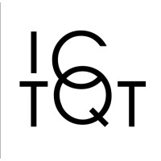

About me
I am a final-year BS-MS student in the Department of Physical Sciences at Indian Institute of Science Education and Research (IISER) Kolkata. My research is in quantum foundations. My master's thesis, supervised remotely by Dr. Beata Zjawin at the International Centre For Theory Of Quantum Technologies (ICTQT), University of Gdańsk, asks which features of quantum theory are genuinely nonclassical, using generalized noncontextuality as the criterion.
I came to this from theoretical cosmology, where I worked with Prof. Koushik Dutta on the origin of cosmic magnetic fields from ultralight dark matter. A side project asks whether entanglement through gravity could be witnessed in the CMB. I am preparing PhD applications in quantum foundations, and the details are on my Research page.
Contact
BS-MS Student, Physics
Indian Institute of Science Education and Research (IISER) Kolkata
Mohanpur, Nadia, West Bengal 741246, India
E-mail: rajgauravmirp@gmail.com
GitHub: raj-gaurav-tripathi
